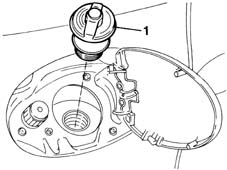
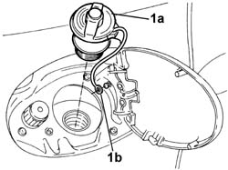

1040A40 PLUG FOR FUEL FILLER PIPE - R + R
- Path
- Procedures > 10 ENGINE UNIT > 1040 FUEL TANK AND PIPES > 1040A FUEL TANK AND COMPONENTS > 1040A40 PLUG FOR FUEL FILLER PIPE - R + R
- Kind
- repair procedure (removal / refitting; the operation number is the code)
- Applies to
- all engines; all production periods
- Interactive page
- https://sloeber94.github.io/elrnDB-fMltpl/en/#/2891246
Applies to: engines: 1.6 16v; all production periods
 Removing
Removing
 Refitting
RefittingOpen the fuel flap.
Unscrew the fuel filler cap and remove it.
Applies to: engines: 1.6 16v; all production periods
Refitting
RemovingFit the filler cap into its seat and tighten.
Close the fuel filler flap.
Applies to: engines: 1.9 JTD 8V; all production periods
Removing
RefittingOpen the fuel flap.
Undo the fuel cap and remove it.
Applies to: engines: 1.9 JTD 8V; all production periods
Refitting
RemovingFit the filler cap to its seat and screw on.
Close the fuel flap.
Applies to: engines: 1.6 16v; production: fino a 05/04; only with equipment: BIPOWER
Removing
RefittingOpen the fuel flap.
1. Undo the fuel filler pipe cap and remove it.

Applies to: engines: 1.6 16v; production: fino a 05/04; only with equipment: BIPOWER
Refitting
RemovingFit the fuel filler pipe cap.
Close the fuel flap.
Applies to: engines: 1.6 16v; production: da 06/04; only with equipment: BIPOWER
Removing
RefittingOpen the fuel flap.
1. Unscrew the filler pipe cap (1a), release the cord (1b) securing it to the body and remove the cap.

Applies to: engines: 1.6 16v; production: da 06/04; only with equipment: BIPOWER
Refitting
RemovingFit the fuel filler pipe cap and fasten the safety cord to the body.
Close the fuel flap.